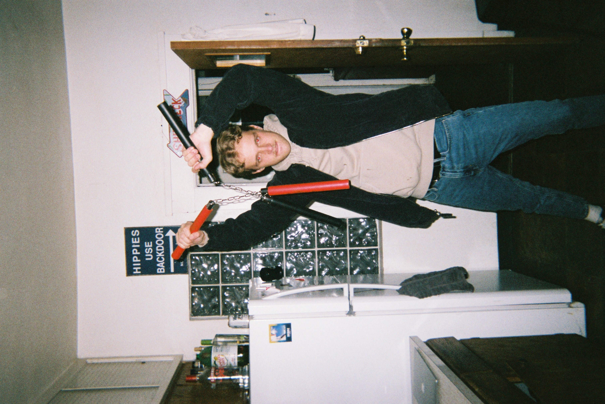
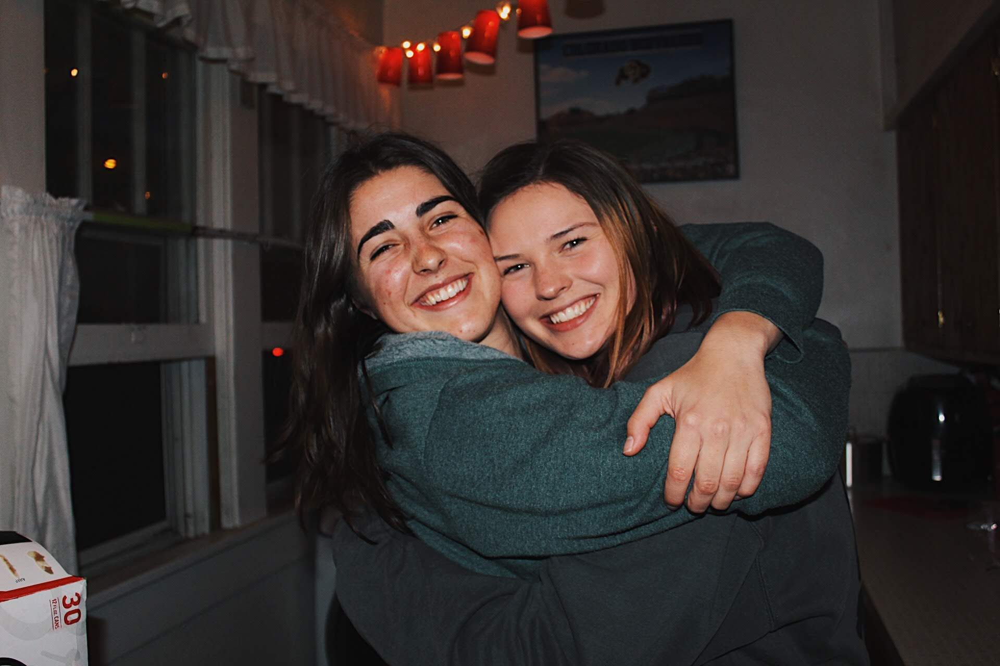
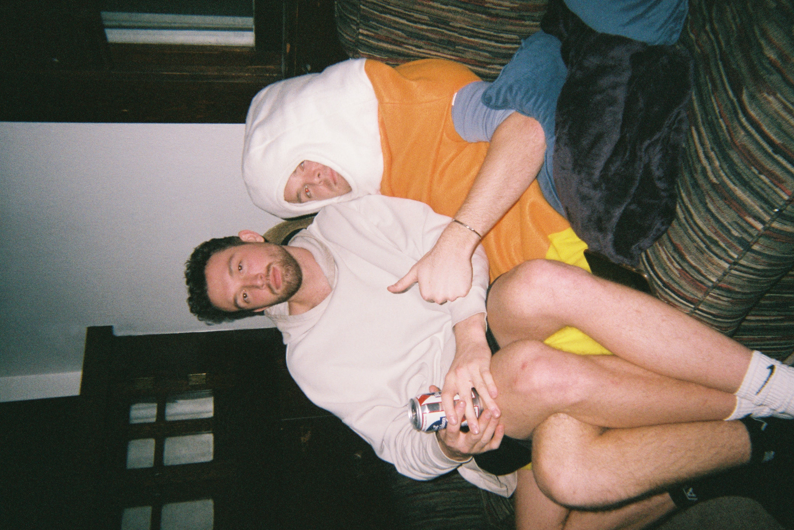
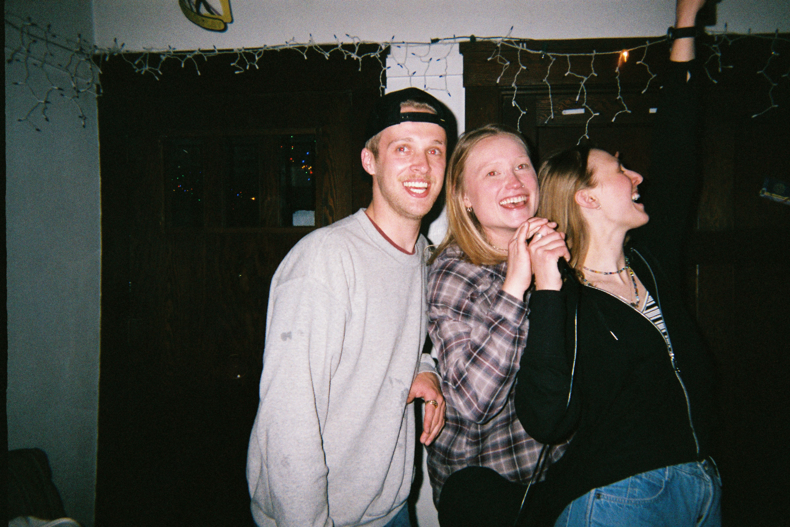
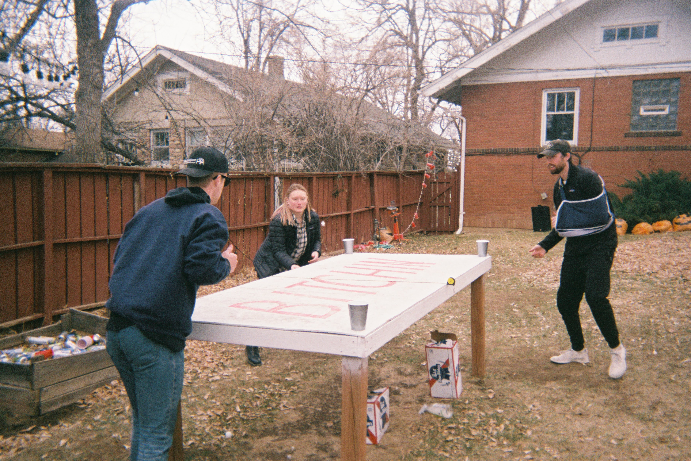
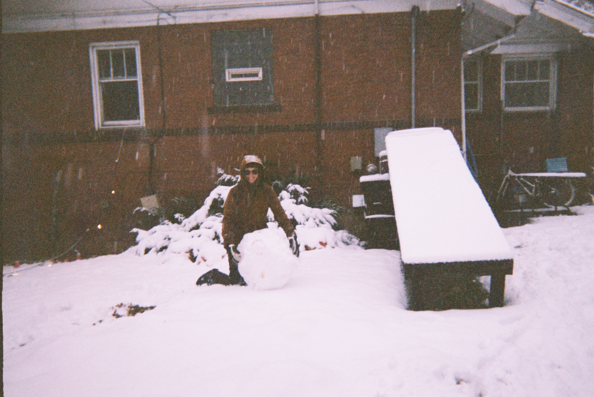

The Shipwreck
Located on Lincoln Place and the corner of 9th and College sits what
seems like just an ordinary old Boulder house. To the people who have spent
their college years living there and to all the people who have been there it
is more than just a house. It is "The Shipwreck." Arguably the most iconic house
in Boulder. The last few years The Shipwreck has also been coined the club
volleyball house.

The People
The most recent people of The Shipwreck were Logan, Hunter, Ashley,
Henry, Erica, Jordan, and Savannah.

Pictured above is Logan, who wished for nunchucks for his birthday. He
clearly got what he wished for and had an incredible 23rd birthday.

These two are Jordan and Sav, who had the attic rooms of the house.
While the attic was unbearably hot in the summers, these two absolutely loved
it, as the wooden walls reminded them of a cozy mountain cabin. Not to
mention, both rooms had incredible views of the iconic Boulder Flatirons.

Here are Hunter and Henry. For Henry's birthday the house created a jenga
game with funny tasks to do on each of the blocks. One block was "put on
Sav's candy corn costume" and one was "sit in the lap of the person to your
right." So this photo is a result of both of those blocks being pulled.

In the middle is Erica. One of her favorite activities was using the karaoke
machine to sing Olivia Rodrigo, High School Musical, and One Direction. Fun
fact: one time during lockdown the cops came to the house because of karaoke
... and it ended up just being three of the roommates singing alone. Oops.
Backyard Activities
The backyard of The Shipwreck was probably one of the largest backyards you
could find in Boulder. More space than known what to do with... but the
opportunities were endless and the tenants took advantage of that. During
the summer you could find them playing games during the day then projecting
movies up against the house at night. And in the winter they would find everything
they could to build a ramp to ski down.

This is the dye table they painted. Along with games like beersbee, volleyball,
ping pong, snowball fights, etc., dye was a fan favorite. they played rain, snow,
and shine. And it was extremely competitive.

This is the ski/snowboard ramp they built ft. Logan building a snowman.
There would typically be a lot more snow to cover the sides and end of
the ramp, then a little jump right at the bottom. They would spend hours
skiing down.